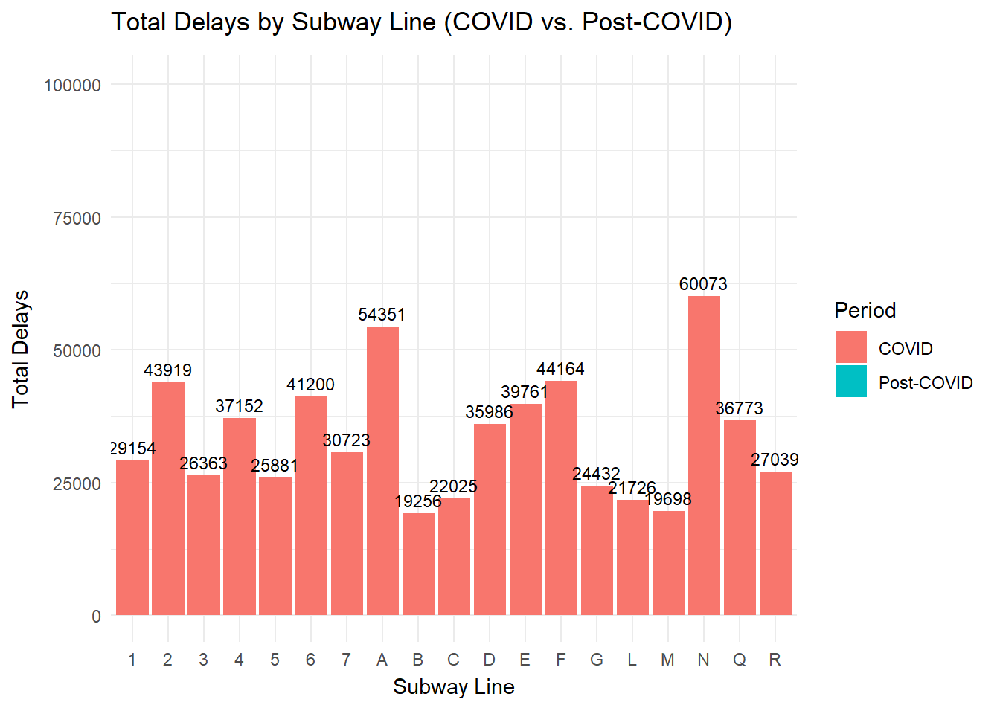
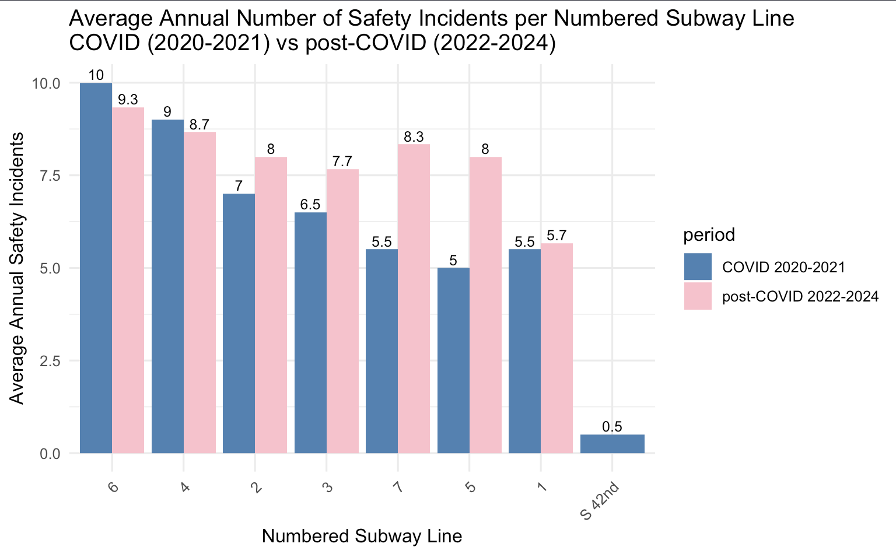
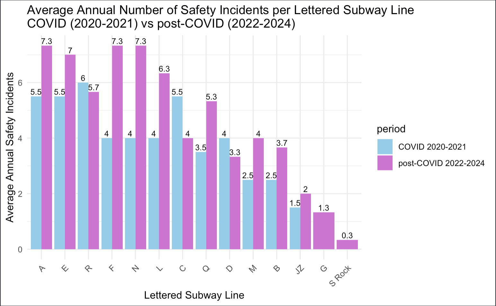
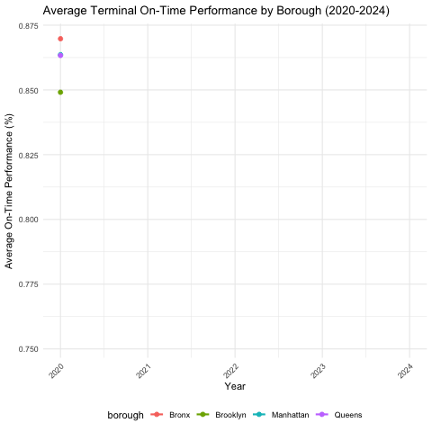
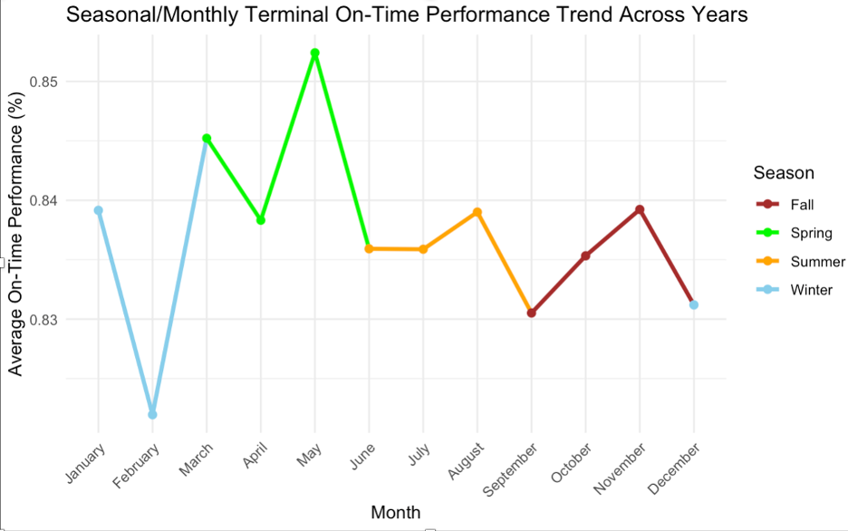
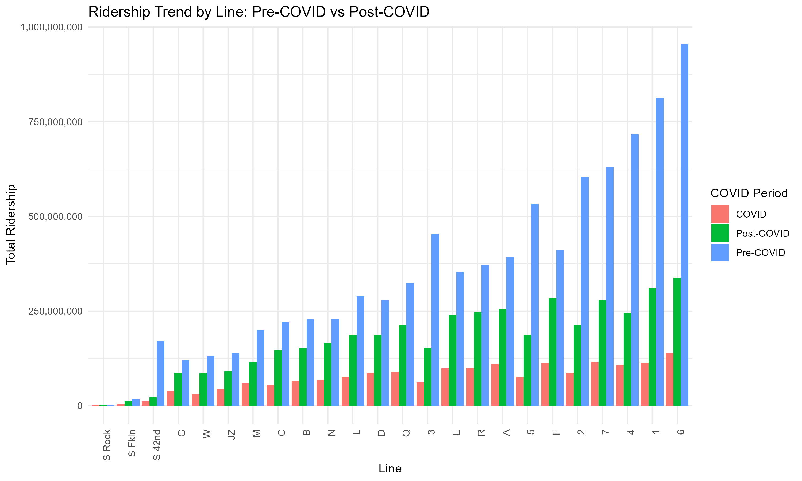
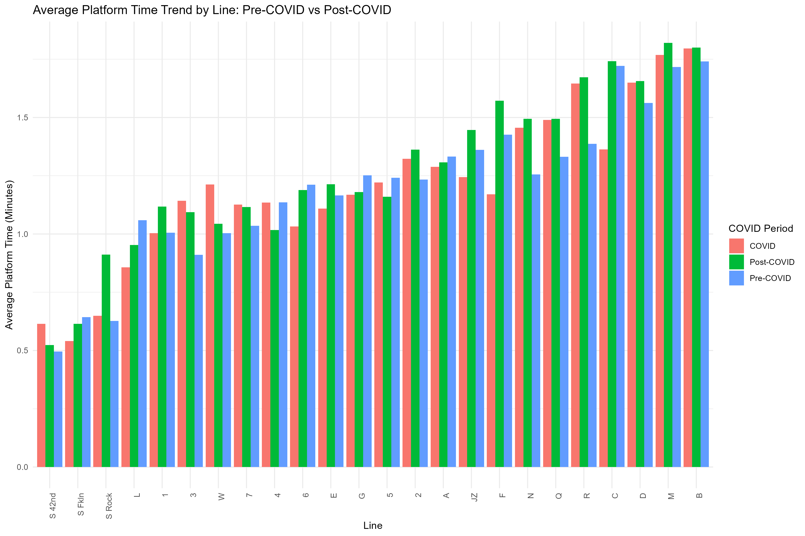
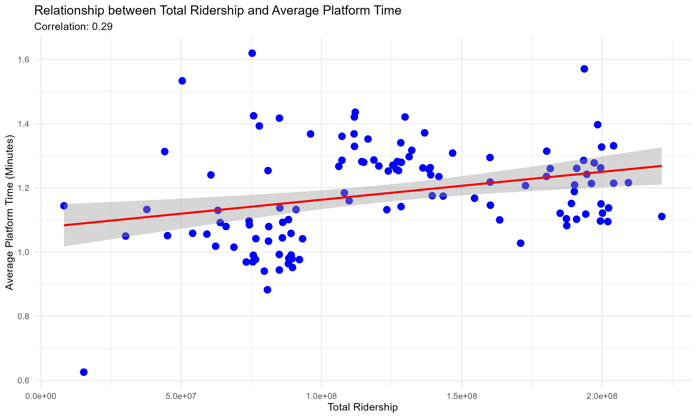

Group 2: Subway Surfers
Authors
Nikita Gautam
Haolin Mo
Yanting Zhao
Zhuo Lin (Chloe) Yu
Timbila Nikiema
How have delays, on-time performance, and safety incidents influenced the efficiency of subway lines across NYC boroughs from 2020 to 2024?
Motivations
The motivation for this analysis is to uncover how delays, on-time performance, and safety incidents impacted the efficiency of NYC subway lines and boroughs during the COVID and the post-COVID recovery period. By exploring these factors, we aim to identify patterns, address operational inefficiencies, and provide insights to improve reliability and safety for future subway operations.
Quantitative Findings and Qualitative Insights
High ridership leads to longer delays and higher safety risks, especially during peak hours. Track-related disruptions highlight the need for better maintenance. Winter months reduce reliability, while other seasons perform better. Post-COVID trends show changing passenger habits and service gaps on busy lines.
Importance of this Analysis
By connecting ridership, delays, and safety, we uncovered critical issues like infrastructure strain, and seasonal impacts. These insights support targeted improvements, better maintenance, resource allocation, and weather-specific strategies to enhance reliability, safety, and rider experience. This analysis demonstrates how combined metrics drive meaningful, system-wide improvements.
About Our Data
For our analysis, we use multiple data sets from the NYC government’s official website. They focus on different metrics. First, we use transit performance data, which evaluates train wait times against scheduled intervals and delay rates during peak and off-peak hours. Secondly, for safety data, we focus on different types of incidents, including safety incidents, track-related incidents, and train-related incidents. Lastly, for ridership data, we examine metrics such as wait times and ridership. These datasets provide us a comprehensive overview of the subway performance.
Data Limitation
The datasets are strong for operational and performance analysis and are up-to-date but may be biased because the datasets focus only on 2020 to 2024, excluding deeper pre-pandemic trends, longer-term recovery patterns, and the full year of 2024. Additionally, the datasets do not include some external factors, such as policy, economics, etc.and they lack exploration of differences in infrastructure or track quality between subway lines.
Analysis addressing motivating questions
The analysis explores NYC subway trends from 2020 to 2024, focusing on incidents, performance, and ridership to answer key questions about system safety, efficiency, and capacity during and after the COVID-19 pandemic.
Incidents & Safety Concerns
Tracking reported incidents over the study period reveals the most common safety issues on subway lines. Temporal patterns show how incident frequency and types shifted during COVID-19 and post-pandemic recovery. These insights help contextualize changes in rider behavior and vulnerabilities in system operations during periods of fluctuating ridership.
Subway Performance:
Performance metrics such as terminal on-time rates and delay patterns during peak and off-peak hours are analyzed to assess operational efficiency. Comparing COVID and post-COVID periods shows how service reliability evolved as ridership recovered. Identifying high-performing lines and those with frequent delays highlights opportunities to enhance service reliability under varying demand condition
Key Findings and Insights
Comparative Analysis: COVID vs. Post-COVID Incident Distribution


To ensure a balanced analysis, both the COVID (2020-2021) and post-COVID (2022-2023) periods are scaled to two years each. Pie charts will illustrate the distribution of incident categories for each period. During the COVID period, signal-related incidents were most prevalent, comprising 33.2% of all incidents, followed by persons on trackbed/police/medical incidents at 30.2%. Other notable categories included track-related incidents (10.8%) and subway car incidents (8.9%). These distributions highlight the operational challenges of maintaining reliability and addressing immediate safety concerns during the pandemic.
Post-COVID, the distribution shifts significantly. Persons on trackbed/police/medical incidents rose to 33.6%, becoming the largest category, while signal-related incidents decreased to 24.6%. Track-related incidents surged to 18.2%, reflecting emerging infrastructure maintenance challenges. These shifts indicate evolving priorities for MTA as the system transitions to a recovery phase, emphasizing the need for focused interventions to address rising safety and infrastructure issues.
Please go to this link for more detailed analysis.
Analysis of MTA Subway Line Performance: Peak vs. Off-Peak Delays

The analysis of subway delay trends, comparing the COVID and Post-COVID periods, highlights significant changes in the performance of various subway lines. The animated bar chart offers a visual comparison of total delays for each subway line across these two timeframes. Delays generally increased for most subway lines, especially as New York City began to reopen. Certain lines, such as the N, F, 6, and A, experienced substantial increases in delays, with some nearly doubling. For example, delays on the N train surged from 60,073 to 100,434 after the pandemic, marking a 67.19% increase. Similarly, the 6 train delays rose from 41,200 to 98,141. This suggests that while delays were reduced during the shutdown, the return to full service and higher ridership in the post-pandemic period has led to an uptick in disruptions.

Furthermore,the animated plot was created to show how total delays changed monthly for both peak and off-peak periods. The plot revealed several trends, including a significant drop in delays during the early months of 2020, followed by a surge in delays as the city reopened and ridership increased. First quarter of 2020 saw a significant drop in delays due to the NYC shutdown in response to the pandemic. Mid-2021 marked the highest surge in delays, coinciding with the city’s phased reopening and increased ridership.
Please go to this link for more detailed analysis.
How have safety incidents (Persons on Trackbed/Police/Medical) reported to the MTA changed between COVID and Post-COVID?
The analysis focuses on the persons on trackbed/police/medical category from incidents and compares the average annual number of safety incidents across numbered subway lines and lettered subway lines.

For numbered subway lines, the bar chart shows that while the average annual number of safety incidents is decreased for the 6 and 4 train, it is increased on all other lines, so the overall trends from covid to post-covid time periods increase by 13.61%. The 6 train has the highest average incidents during both periods but decreased to 9.3 in post-COVID. The 5 train and 7 train have increase the most of almost any numbered subway line.

For lettered subway lines, the numbers of annual average safety incidents of almost all subway increase, except the R and D train, with increase by 34%. The A, E, F, and N trains exhibit a significant increase from an average of 4 incidents during COVID to 7.3 incidents post-COVID, which increase the most across all lines.
Overall, almost all subway lines face serious safety problems. With everyone returning to normal life from the post-covid recovery, it will pose a threat to rider safety if improvements are not made to the safety incident problem.
Please go to this link for more detailed analysis.
What is the trend in terminal on-time performance from 2020 to 2024? How does performance differ between the COVID period and post-COVID recovery ?
Trend of On-terminal by Borough
This shows comparative analysis of average terminal on-time performance by borough from 2020 to 2024. It highlights variations in performance across the Bronx, Brooklyn, Manhattan, and Queens. We aim to uncover how delays and safety incidents may have influenced overall efficiency. This will help pinpoint areas of operational strain and provide insights for improving performance and reliability across the subway system..

The graph highlights borough-specific trends in on-time performance from 2020 to 2024, with a sharp decline in 2022 due to post-pandemic challenges. Queens consistently performed better, indicating greater resilience, while Brooklyn and the Bronx showed slower recovery and lower efficiency.The findings emphasize the need for targeted efforts to address delays, safety concerns, and operational inefficiencies.
Seasonal Impact
Let’s identify seasonal and monthly trends. The goal is to highlight how external factors, such as weather and operational challenges, impact system reliability.

The seasonal analysis shows distinct trends. Winter has variability, with a dip in February and recovery in December due to weather. Spring performs best, steadily improving to peak in May. Summer stays stable with a small drop in July and recovery in August.
Please go to this On-Terminal Performance(2020-2024) for more detailed analysis.
What is the relationship between ridership and wait times, and does higher ridership correlate with longer wait times?
Ridership Trend Analysis by Line
Graph 1: 
Ridership and wait time data provide insights into system dynamics across lines: High-Ridership Lines: Lines 1, 6, and 4 experience the highest ridership due to their service in densely populated and commercially active areas. Low-Ridership Lines: Shuttle services (e.g., S Rock, S Fkn, S 42nd) show the lowest ridership due to their limited scope. Passenger Distribution: Ridership on high-use lines (e.g., 1, 6) contrasts sharply with mid-tier lines (e.g., Q, R, C), reflecting variations in population density, service frequency, and transit connectivity
Average Wait Time Analysis by Line
Graph 2: 
Line Variability: Shuttle lines consistently have the lowest wait times due to their shorter routes, while lines like B, D, M, and R face higher wait times, often due to congestion or complex operations. Trends Over Time: Most lines exhibit stable wait times across pre-COVID, COVID, and post-COVID periods, with notable variability on lines like C and R due to operational changes.
Correlation Analysis
Graph3: 
Higher ridership shows a weak positive correlation with wait times, but service frequency and efficiency significantly influence outcomes. Effective strategies on shuttle and high-ridership lines highlight potential for managing demand. These insights support improving subway safety, performance, and reliability by addressing congestion and enhancing operations on busy routes.TimbilaNikiema
Relation to Prior Work
The MTA’s annual performance metrics reports play a crucial role in evaluating the effectiveness of its public transportation services. By using benchmarking techniques, the MTA compares its performance against peer agencies, which helps identify best practices that can be implemented to improve operational efficiency and cost-effectiveness. These performance metrics are made publicly available to ensure transparency and are submitted to oversight agencies such as the FTA, while also being included in the National Transit Database.
Our group’s work builds directly on this foundation by analyzing incident categories and trends, which aligns with the MTA’s commitment to using data for continuous service improvement. Our focus on incident trends, particularly post-COVID, offers more detailed insights that complement the broader performance metrics reported in the MTA’s annual reports. By focusing on the shifts in incidents during and after the pandemic, we shed light on the evolving operational challenges the MTA faces. Our analysis not only contributes to understanding the impact of these trends but also provides valuable context to help guide future decision-making within the organization.
Potential Next Steps:
Pre-Pandemic Trends and Long-Term Patterns
Analyzing subway performance prior to the pandemic is vital for establishing a benchmark for comparison. Historical data can reveal long-term performance trends, pinpointing recurring issues with specific lines or infrastructure challenges that existed before COVID-19. Expanding the time frame back to the early 21st century will provide a clearer picture. This analysis helps differentiate between issues caused by the pandemic and those that have persisted over time.
Variations Across Subway Lines and Boroughs
Further research should explore performance differences across subway lines and boroughs. Factors like infrastructure quality, line age, and service frequency affect service consistency. Older subway lines or those with outdated infrastructure tend to experience more maintenance issues and delays. Identifying these disparities allows for targeted solutions, such as infrastructure upgrades, more frequent service on high-demand routes, or new trains for aging lines.